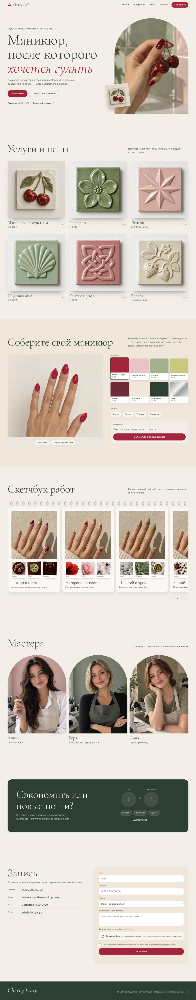

Студия маникюра · концепт
Cherry Lady
Конструктор маникюра на фото руки: клиентка подбирает оттенок и дизайн для каждого ногтя, а мастер видит его в заявке.
- Услуги и цены на керамических изразцах
- Скетчбук работ с источниками вдохновения
- Мини-игра за скидку и запись с фото дизайна